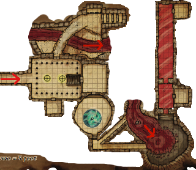

Week 29 - Plenty of XP, but where's the loot?
A good session, all present and accounted for. Ta to Bevis for hosting.
 Our heroes decide to deal with the wraith that the Earl warned them about. They rest overnight, and in the morning Frith beseeches his various deities for spells pertaining to battling the unead, in particular, enough Death Ward spells for the entire party.
Allustan leaves the party, recognising that they have surpassed him in power, and reminding them again that the wind dukes likes to be buried with their weapons. “After you retrieve whatever you can for our coming battles, come see me. I'll give you directions to my old master, Manzorian.”
This fight would have gone very, very differently if the party had not made friends with the Earl of Coalchester and been warned about the wraith.
The party discuss the situation, then head through the door to the south of the pillared chamber. Frith casts Hide From Undead on everyone, and they head through the door. The wraith, however, sees through the spell and attacks! Frith turns the wraith forcing it to flee. The rest of the party go “WTF did you do that for?”, as their short-duration spells expire.
While waiting for the wraith to get over its fright, they examine the chamber. There is a suit of armour that goes ping, and something interesting - an outline in the dust in an alcove where once lay some sort of object. Circular, and about a foot in diameter.
After two minutes, the wraith returns, muttering about “theft of shrine treasures by the foot soldiers” . The party battle, but take little hurt as they are warded against the worst of powers by Frith’s spells. The party takes some damage from the thing's raking claws, but that is all cut short when Frith manages to connect with a Heal spell. The wraith's essence is overwhelmed with holy life-giving power and it is snuffed out.
The party get partway in, and are attacked by Xorns, who pop up through the stone of the floor and ceiling. Flash implores the party not to harm the Xorns (via Rary's Telepthic Bond) while he attempts to negotiate in Terran. The party do so, defending themselves only against the Xorn's first attacks. But Flash muffs the negotiations badly (natural 1), only managing to insult the creatures. The party give up the Mr Nice Guy approach and simply kill the creatures, whom are utterly outclassed.
They then face a door, covered with devices and radiating magic of all sorts. It will take hours to get through. But Jericho notices something curious while searching it … some of the levers and dials aren't connected to anything at all! After all the false doors and time-wasting dead ends in this tomb, the party suspect another. Flash uses his "sudden etheralness" spell (or item) and does a quick six-second flythrough. As suspected, there are a series of doors, which eventually end in a blank stone wall. The party give it up as a bad job.
So where now? Possibilities are:
- the stairs to the south of the lightning chamber
- jumping in the river
Ooops - I screwed this up just a little, and the description I gave the party does not exactly match the description I gave on the night. Since what happened on the night is how it really was, I will forgo including he description from the module. Regrettably, this wussed out the trap severely.
Jericho carefully checks the stairs for traps, and then descends the short distance to stand at the landing on the bottom. There, he checks for more traps … and realises that he is standing on a pressure plate. He leaps back up the stairs just in time. The party flee. A steel plate slams shut across the doorway, and there is a sound of rushing water.
After a minute or two, Jericho and the party return. The plate has locked into place and is permanent: it does not appear to be a resetting trap. Gauthakan deals with the plate, and the party sees that the corridor is now filled with a strong current of red water, leaving only headroom between the water and the ceiling.
Frith and Jericho decide to proceed through the tunnell, using Spider Climbing to cling to the walls and ceiling and keeping their heads above the water.
They return to the party, and report what they have found. With Spider Climbing and Freedom of Movement they navigate the corridor without incident, and approch the short flight of stairs and the all behind it.
Ripped off! It was a Kolarut inevitable. First round, it fired the eye beam and did minimum level drain (1 level), second round it rolled a 1 to hit. Feh! And that was with my lucky d20. Ripped off big time. If it had won initiative, it would have dropped the portcullises earlier, leaving Gauthakan outside and Jericho alone in there with it. Ripped off to the max.
There is a small room behind where the construct stood, but it is empty. Even to Jerichop's skilled looting, completely bare. In disgust, the party head north - Gauthakan dealing with the portcullis.
The party, at this point, fall to discussing the staggering lack of loot that this tomb complex is offering. They decide to return to the room with the trapped urn, and deal with it.
Well, there’s not a lot to tell. Frith casts Wieldskill on Jericho, who manages a disable device roll of 43, and avoids a rather nasty level drain effect. They send an Unseen Servant to take the top of the urn off. Nothing happens. Inside the urn are ashes, and inside the boxes - which are locked and not trapped - are dresses, jewelry, and some clay tablets covered in ancient writing. From this, and the style of the chamber, the party concludes that this room is simply where a wind-duke woman is interred. They leave her ashes, but nick all her stuff.
Well! What now? Was Allustan right about there being weapons in here, somewhere? Cause there’s been precious little treasure so far. There’s still some more to explore, yet, so we’ll find out what happens next week.